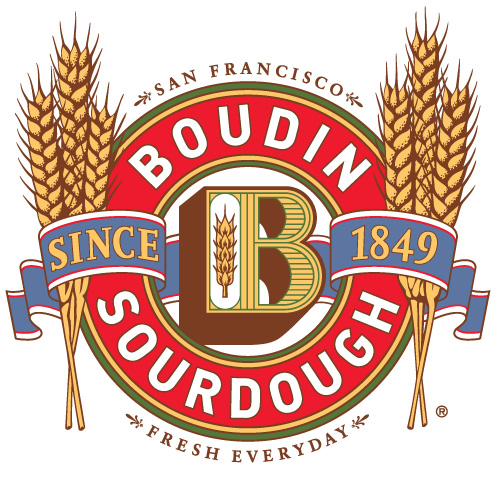

<!-- start meta  include -->
    <?php include '../inc/le_meta.php'; ?>
		
<div class="container content_wrap">
	<div class="row">         

<!-- start sidebar  include -->
	<?php include '../inc/side_menu.php'; ?>
            
            <div class="span6 content_inside">
            	<h3>About Boudin</h3>

<p>

From a tiny, old-world bake shop located on San Francisco’s Dupont Street to our Flagship property at Fisherman’s Wharf, Boudin has evolved to the state-of-the art facilities and services we operate today - and emerged as San Francisco’s oldest continuously operating business since 1849. Though much has changed since our boomtown beginnings our bread recipe has not. </p>
<p>
Our founder, Isidore Boudin, knew that the secret to great taste is keeping it simple. That’s why
our bread is still made with only four ingredients: flour, water, salt and mother dough. But this
approach doesn’t stop at bread. Our commitment to simple, fresh ingredients and world class
craftsmanship drives everything that we do.</p>
<p>
The premium meats, gourmet cheeses, fresh vegetables, and homemade dressings we use are all natural and locally sourced whenever possible. Our catering team uses these simple ingredients to prepare dishes that pair perfectly with our world famous sourdough.</p>
<p>
Today we still hold fast to our long-standing mission of bringing you fresh, quality food made from simple ingredients, at affordable prices.</p>

<h4>It’s Our Nature to Nurture</h4>
<p>
Like many businesses, we have been doing what we can in a more environmentally friendly manner because we think it is the right thing for our planet. Nurturing our famous mother dough has taught us that taking care of yourself and mother earth go hand in hand.</p>


            </div>
            
         <div class="span3 content_inside"> 
         
         </div>
            
 </div>  
 </div> 


<!-- start sidebar  include -->
	<?php include '../inc/footer.php'; ?>